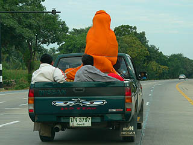
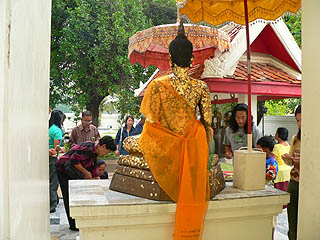
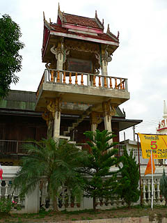

ワット チャイ
ヨー/アントン県
WatChaiyo/AngThong
仏暦2059年の元日である。
初詣はアントンとシンブリーにいこう、という事になった。
アントンとシンブリーは共にアユタヤの北に位置し、バンコクから車で2時間弱のところにある。
ハッキリ言ってまず一般の観光客は足を踏み入れないであろうこの地に行く事になったのは、アントンにあった奇妙な寺の写真を見たからだった。
その奇妙な寺のハナシは後に詳しく述べるが、心は一路アントンへ。
ついでに周辺に面白そうな寺はあるかと調べたところ、ざっくざっく出て来ました・・・
タイでも屈指の大仏大寝釈迦多発地帯であることが判明したのであった。
チャーターした車の運ちゃんはアントン出身でアントンの事ならまかしとけ状態。
さすが地元だけあってこちらのリクエスト以上のレスポンスを見せてくれるハッスル振り。
余程アントンに行く観光客が珍しかったのかも知れない。
てなわけで車はバンコクを出発し高速道路をひたすら北上する。渋滞もなく快適な道だ。
途中の国道で見かけた光景。
お寺に寄進するのだろう。トラックの荷台にオレンジ色の布に包まれた仏像が乗っていた。

で、アントン県北部のチャイヨーという村に到着。
ここにワットチャイヨーという寺がある。本日最初の目的地にして本年の初詣でもある。
運ちゃん曰くアントンでも有名な寺だという。では初詣はこの寺で執り行いましょ。
褄入り形式の比較的新しいと思われる建物の周りには食堂や土産屋などが並び、多くの人が参拝に訪れている。
大仏がおわす本堂にはすでに大勢の参拝客が新年の祈りを捧げている。
運ちゃんに話を聞くと特に新年だからという訳ではなくここには毎日大勢の人が来ている、という事だった。
で、大仏さんである。
大きさは約23メートル。奈良の大仏を遥かにしのぐ大きさである。
ただ、その割には内装がさっぱりしているのであまり威圧感は感じない。台座が低いのも一因かも。あと顔に迫力がないのも。
むしろ柱の隙間から見た瞬間の方が大きさは実感できるような気がする。あと、お尻のカーブが何とも迫力満点でした。
うむ。流石泰国有数の大仏である。その大きさ、キッチリ堪能させていただきましたぞよ。
さて、初詣も済んだことだし、タイの方々の参拝風景も見させて貰いましょう。

大仏の前で参拝するのはモチロンの事、金箔を貼るのも大事な参拝方法のひとつ。
まあ、日本でいえば本尊に参拝する以外にもお地蔵さんに水を掛けたり絵馬を奉納したりと様々な参拝バリエーションがあるのと同様、タイでも様々な参拝方法がある。
金箔を貼ったりカゴの鳥を放ったり鐘を突いたりする参拝が代表的だが、その他もろもろの参拝方法がある。
時にはビックリする事もあるが、それは追々述べていきましょう。
タイでは比較的良く見かける鼓楼。階段がスリリングですね。

境内には様々な仏像が点在している。屋外仏はコンクリかレンガ積＋漆喰仕上のケースがほとんど。
右のお坊さんは何を持ってるんでしょう？
次の修行場へ
泰国珍寺武者修行
珍寺大道場 HOME